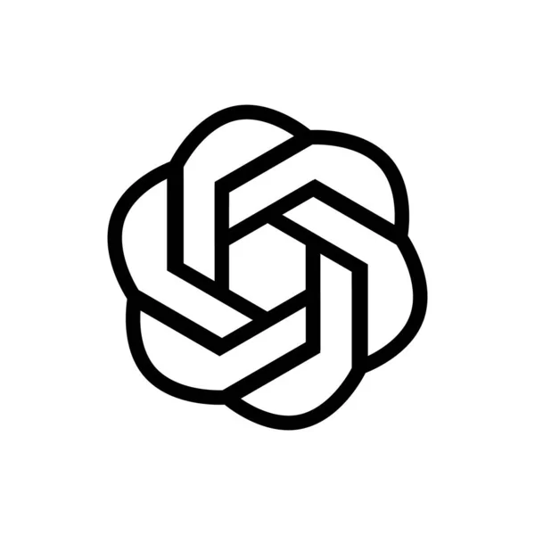

Kecerdasan buatan (AI) adalah teknologi yang memungkinkan mesin untuk meniru kemampuan kognitif manusia, seperti belajar, memecahkan masalah, dan membuat keputusan.
AI bekerja dengan memproses data dalam jumlah besar untuk mengenali pola, membuat prediksi, dan melakukan tugas-tugas yang sebelumnya hanya dapat dilakukan manusia, seperti pemrosesan bahasa, pengenalan gambar, dan otomatisasi tugas.
Contohnya termasuk fitur filter spam pada email dan sistem pengenalan wajah seperti Face ID
Salah satu contoh AI yang kita ambil untuk saat ini yaitu Chat GPT
